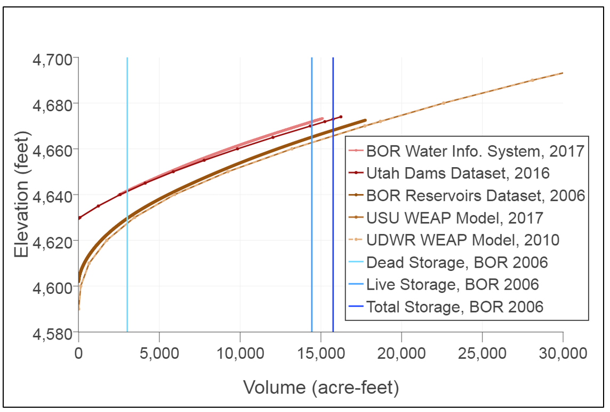

Use case 4¶
Identify and compare data that describe infrastructure across many sources
Example
What is the volume, purpose, evaporation, and elevation of Hyrum Reservoir Utah?
Problem¶
Identifying data that describe the water system infrastructure like a reservoir purpose and its bathymetry requires specific and time consuming methods to query and manipulate them.
Solution¶
WaMDaM enables organizing all of such data types according to one method. We use the controlled instance name of “Hyrum Reservoir” and a set of controlled attribute names to identify infrastructure related data: “Volume”, “Elevation”, and “Purpose”. The query result in multiple values for available data types (e.g., numeric, time series). The query identified four different curves for volume-elevation and many volumes for Hyrum Reservoir. There are also two time series of storage and elevation which have the same time step and extent which allows plotting both of them as a fourth empirically derived storage and elevation curve (Figure 9).
First of all, there appears to be a systematic displacement in elevation between the upper (red) and lower (black-grey) curves. Second the curves cover different ranges of volume. We identified the following insights after deliberate discussions in a meeting and many emails on the differences between them from the two main sources, the state of Utah where the reservoir is located and the BOR who owns the dam. We found that the upper (red) curves indicate the usable “live storage” which does not account for the unusable “dead storage” while the lower curves indicate the “total storage”. The BOR reported “dead storage” as 3012 acre-feet at the elevation of 4629.6 feet. Relevant to semantic differences, dead storage is also known in the WEAP Model as “Top of Inactive” and in WASH as “MinCap”. We found that subtracting or adding dead storage below the elevation of 4629.6 feet reproduces similar lower or upper curves. On the other hand, water managers at the Utah Division of Water Resources suggested that the extended lower two identical black and gray curves (they actually extend longer up to 70,000 acre-feet volume and 4,750 feet elevation (not shown)) could have been used to project future bathymetry extrapolation if the dam height is elevated.
The data sources did not report the time it is used to measure the curves nor the specific method of estimating storage or elevation. In correspondence with the BOR, we found that water elevation in a reservoir is measured using a pressure transducer and the storage is computed from the elevation in a formula they have for the reservoir. We also found that the BOR updated the bathometry estimates for Hyrum Reservoir in 2006 which changed compared to the initial estimates in 1935. The total storage has decreased by 1,179 which is 6% less or the original storage due to decrease in both the dead and live storage. Table A7 in the Appendix lists all the identified volume values for Hyrum Reservoir and how the Utah and US Dams datasets and the WEAP and WASH models were reporting different storage values from the old and the new bathometry values without clear indication of which one it was. They also used these different native terms where none of them distinguished between live and total storage: Storage Capacity, STORG_ACFT, MAX_STOR, MaxCap. The query returns all the attribute with their different native terms because we registered each attribute with the controlled vocabulary term. The percentage of dead storage to total storage is relatively high about 17% in this small reservoir and misusing the total or live storage could make a big difference in modeling results.
The data sources did not report the time it is used to measure the curves nor the specific method of estimating storage or elevation. In correspondence with the BOR, we found that water elevation in a reservoir is measured using a pressure transducer and the storage is computed from the elevation in a formula they have for the reservoir. We also found that the BOR updated the bathometry estimates for Hyrum Reservoir in 2006 which changed compared to the initial estimates in 1935. The total storage has decreased by 1,179 which is 6% less or the original storage due to decrease in both the dead and live storage. Table A7 in the Appendix lists all the identified volume values for Hyrum Reservoir and how the Utah and US Dams datasets and the WEAP and WASH models were reporting different storage values from the old and the new bathometry values without clear indication of which one it was. They also used these different native terms where none of them distinguished between live and total storage: Storage Capacity, STORG_ACFT, MAX_STOR, MaxCap. The query returns all the attribute with their different native terms because we registered each attribute with the controlled vocabulary term. The percentage of dead storage to total storage is relatively high about 17% in this small reservoir and misusing the total or live storage could make a big difference in modeling results.
Such above differences are not clearly defined in the datasets and they were not obvious until we compared them together from multiple datasets and asked about their metadata. The use of clear and consistent terminology and metadata to describe water system components can be very important for modeling and management of the system. WaMDaM provides an opportunity to improve how the use of terminology and metadata as users may look into metadata and contact the people who provided or created it to identify potential reasons for the differences which could be from using different methods, and assumptions if available. Organizing all the datasets with such different data types enables a more readily way to access and comparing them that was not possible before.
| Use Case | Query | Result |
|---|---|---|
| NumericValues_otherTypes | Query | Result csv |
| MultiAttributeValues | Query | Result csv |
| MergeTimeSeriesValues | Query | Result csv |
| NumericValues_Metadata | Query | Result csv |
| MultipleTimeSeriesColumnsSameTimeStamp | Query | Result csv |
| MultipleDescriptorValues_HydroPower | Query | Result csv |
| Use Case figure | Python Script | Interactive figure |
|---|---|---|
| Figure | script | Figure |
 Figure 1: Five volume-elevation curves and volume values at three stages in Hyrum Reservoir, Utah as reported by multiple sources. Volume vertical lines are extended to the full range to cross all curves and for simplicity. Color-coded curves lighter to darker indicate larger volume at the same elevation. Color coded blue vertical lines indicate larger volume at low to high elevations.
The query earlier also returns many values about the reservoir purposes from the US Dams dataset (Table A8). The original data shapefile only stores the Descriptor Value code and keeps the definition separate in PDF of HTML pages. WaMDaM provides both so users can look up what each code means. Here Hyrum Reservoir is not reported to have hydropower as one of its purposes. In running the query on other reservoirs in Utah, we discovered that the purpose “H” which denotes Hydropower does not exist for other reservoirs in Utah that are known to generate hydropower like the Jordanelle Reservoir which has a capacity of 13 Megawatts. In a comparative analysis between the US Dams dataset and the US Hydropower dataset, another query searched for all the reservoirs in Utah that have Hydropower as recorded in the National Hydropower Datasets which retuned 73 plants. However, the National Dams dataset only returned 9 dams in Utah “UT” that have Hydropower “H” as one of its purposes. The latter query used the attribute “State” to select the search boundary which is another way other than using the coordinates. Here users can filter and search for nodes and links based on the values of their attributes. The Hydropower dataset returned that Hyrum Reservoir has a small hydropower plant with 0.5 Megawatts. In this case the comparison reveals that the Hydropower Dataset is more reliable in this regard and the US Dams dataset needs to be updated.
Populating WaMDaM with multiple datasets from different sources (like hydropower and dams datasets) can complement each other and provide either similar, different, or additional data than otherwise of one dataset. Bringing all values together allows comparisons not only to the values but possibly to the underlying assumptions and methods among them.
Next¶
After identifying water supply, demand, and infrastructure, in the next use case users can identify the connectivity of a node site, inflow into and outflow of it which represents the mix of natural and built water management network.